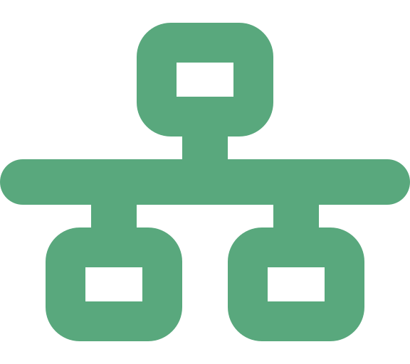
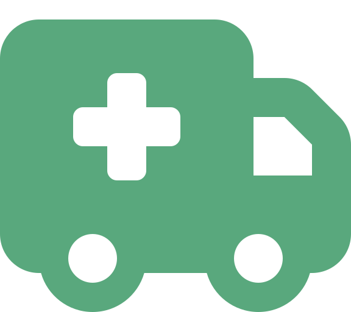

Portada
Arquitectura de Software
Semana 13 — Middleware y Frameworks: el software que conecta al software
Universidad de Antioquia · Ingeniería de Sistemas · 2554608 · 2026-2

Apertura
El sistema nunca dejó de "funcionar".
Cada pieza, por separado, hacía su trabajo.
Londres, 4 de noviembre de 1992 — el día que el despacho de ambulancias de toda una ciudad colapsó, no porque un componente fallara, sino porque nadie diseñó la capa que los conectaba.

Transición
Un colapso que no fue culpa de ningún componente en particular
El London Ambulance Service (LAS), el servicio de ambulancias de Londres, había construido un sistema nuevo con partes bien pensadas por separado: toma de llamadas, localización de vehículos, terminales de datos en cada ambulancia. Cada una funcionaba. El sistema completo, no.
Antes de nombrar el concepto con teoría, vean la cronología completa del incidente — porque explica exactamente por qué el middleware no es un detalle técnico secundario.
Caso · Ficha técnica
London Ambulance Service, 1992
| Organización | London Ambulance Service (LAS) — servicio público de ambulancias de Londres |
|---|---|
| Sistema | CAD (Computer Aided Dispatch) — despacho de emergencias asistido por computadora |
| Puesta en producción | 26 de octubre de 1992, reemplazando el despacho manual |
| Colapso total | 4 de noviembre de 1992, tras días de fallas crecientes |
| Consecuencia inmediata | Regreso forzado a un despacho manual o semi-manual durante varias horas |
| Fuente | Informe de investigación de la South West Thames Regional Health Authority (1993) |
Uno de los casos más citados en ingeniería de software sobre fallos de integración en sistemas distribuidos de misión crítica.
Caso · La arquitectura del sistema
Varios componentes, una sola capa que los conectaba
El nuevo CAD estaba pensado para coordinar miles de llamadas de emergencia al día entre múltiples componentes de software:
- Toma de llamadas: registro de la emergencia reportada por el ciudadano.
- Localización de vehículos: saber dónde está cada ambulancia disponible en tiempo real.
- Terminales de datos móviles: pantallas dentro de cada ambulancia que recibían la orden de despacho.
Todos estos componentes se comunicaban entre sí mediante una capa de mensajería — el middleware del sistema. Ninguno de ellos, por separado, era el problema.
Caso · Las fallas progresivas
Días después de arrancar, empezaron las grietas
Poco después de la puesta en producción del 26 de octubre, el sistema comenzó a mostrar síntomas cada vez más graves:
- Despachos duplicados o perdidos: la misma ambulancia recibía dos órdenes, o ninguna orden llegaba a la unidad correcta.
- Ambulancias no despachadas correctamente a pesar de que la llamada sí había sido registrada.
- Acumulación creciente de mensajes de excepción sin procesar en la capa de mensajería — errores que el sistema generaba, pero que nadie ni nada estaba resolviendo.
Cada síntoma por separado parecía un problema menor. Juntos, eran la evidencia de que la capa que conectaba los componentes se estaba ahogando.
Caso · El colapso
4 de noviembre de 1992: el sistema se detiene
El sistema colapsó por completo durante varias horas, forzando el regreso a un despacho manual o semi-manual mientras se resolvía la falla.
El informe de investigación posterior (South West Thames Regional Health Authority, 1993) atribuyó el fallo a un cronograma poco realista, pruebas inadecuadas y falta de una gestión de proyecto clara — pero el punto central para esta sesión es otro:
la capa de middleware de mensajería entre los componentes distribuidos no fue diseñada ni probada para el volumen real y la variabilidad de los datos del mundo real (ubicaciones imprecisas, colas de mensajes que crecían sin control), lo que hizo que los mensajes se acumularan y el sistema se volviera cada vez más lento hasta colapsar.
Caso · Consecuencia
Lo que se ha señalado sobre el impacto humano
Se ha señalado en el informe de la South West Thames Regional Health Authority y en análisis posteriores que los retrasos causados por el fallo pudieron haber contribuido a demoras en la atención de algunas emergencias.
No existe una atribución causal judicial definitiva sobre casos individuales — este curso no afirma una cifra de fallecidos ni un vínculo causal probado; lo que sí es un hecho documentado es que un servicio de emergencias de una ciudad completa quedó, durante horas, sin su principal herramienta de coordinación.
Esa es la escala real de lo que significa que "la capa de conexión" falle en un sistema de misión crítica.
Transición
De la anécdota a la pieza que le faltó robustecer
Toma de llamadas, localización de vehículos, terminales móviles: cada componente del LAS pudo haberse construido y probado perfectamente bien de forma aislada. Lo que colapsó fue la pieza invisible que los mantenía hablando entre sí.
Esa pieza tiene nombre en arquitectura de software: middleware. Hoy es el tema central de la sesión, junto con los frameworks — la otra estructura de software que, igual que el middleware, no resuelve el problema de negocio directamente, sino que organiza cómo se construye y se conecta todo lo demás.
Concepto
¿Qué es middleware?
Middleware es software intermedio que conecta y coordina componentes distribuidos o heterogéneos, ocultando la complejidad de la comunicación entre ellos.
- A diferencia de un componente de aplicación, el middleware no resuelve un problema de negocio (facturar, agendar, autenticar) — resuelve un problema de comunicación e infraestructura.
- Vive "en el medio": entre la aplicación cliente y el servidor, entre dos servicios, entre la aplicación y la base de datos, entre componentes escritos en tecnologías distintas.
- Cuando funciona bien, es invisible — nadie lo nota. Cuando falla, como en el LAS, falla todo el sistema aunque cada componente individual esté bien construido.
Concepto · Categorías de middleware (1/2)
Middleware de mensajería (message queues)
Es el tipo de middleware que le faltó robustecer al LAS: un sistema que recibe mensajes de un componente, los pone en una cola y los entrega a otro componente, sin que ambos tengan que estar disponibles al mismo tiempo.
- Desacopla a quien envía el mensaje de quien lo procesa: el emisor no espera una respuesta inmediata.
- Debe diseñarse para el volumen real de mensajes y para datos variables o imprecisos del mundo real — exactamente lo que el CAD del LAS no soportó, acumulando mensajes de excepción sin procesar hasta colapsar.
- Ejemplos actuales de la industria: RabbitMQ, Apache Kafka, Azure Service Bus.
Concepto · Categorías de middleware (2/2)
Otras tres categorías del catálogo
| Categoría | Qué conecta |
|---|---|
| Middleware de bases de datos (ODBC/JDBC) | Estandariza cómo una aplicación se conecta a distintos motores de base de datos, sin que el código de la aplicación necesite conocer los detalles propios de cada motor. |
| Middleware transaccional | Coordina que un conjunto de operaciones distribuidas se completen todas o ninguna (atomicidad), incluso cuando abarcan varios sistemas distintos. |
| Middleware orientado a objetos distribuidos | Permite que objetos ubicados en máquinas distintas se invoquen entre sí como si estuvieran en el mismo proceso. |
La última categoría ya la vieron en la Semana 6: Broker (catálogo POSA) y su implementación clásica, CORBA, son exactamente ese tipo de middleware de objetos distribuidos.
Concepto
¿Qué es un framework?
Un framework es una estructura de software reutilizable que define el esqueleto de una aplicación y le dice al desarrollador dónde y cómo insertar su propio código.
- A diferencia del middleware (que conecta componentes ya construidos), un framework da forma a cómo se construye la aplicación desde el inicio: define carpetas, capas, convenciones de nombres, ciclo de vida de los objetos.
- Ejemplos: ASP.NET Core, Spring, Django, Angular, React (con matices) — cada uno impone una manera de organizar el código de quien lo usa.
- El desarrollador no empieza de cero: rellena los "espacios en blanco" que el framework ya dejó definidos.
Concepto · Idea central
Inversión de Control: el framework llama a tu código
Inversión de Control (IoC) es el principio que distingue a un framework de una simple librería: en vez de que tu código llame a las funciones de la herramienta cuando lo necesita, es la herramienta la que llama a tu código en el momento que ella decide.
- Con una librería, el control lo tiene tu programa: tú decides cuándo invocar cada función (ej. una librería de fechas, de logging).
- Con un framework, el control lo tiene el framework: él define el flujo general de la aplicación (ej. cuándo arranca, cuándo procesa una petición HTTP) y solo te "delega" el pedazo de lógica de negocio que le corresponde a tu código.
Por eso se dice "no llames al framework, el framework te llama a ti" — es la frase que mejor resume la inversión de control.

Concepto · Tabla comparativa
Librería, framework y middleware: tres cosas distintas
| Librería | Framework | Middleware | |
|---|---|---|---|
| ¿Quién llama a quién? | Tu código llama a la librería | El framework llama a tu código (IoC) | Conecta a otros, no es llamado por tu lógica de negocio |
| ¿Qué problema resuelve? | Una función puntual (fechas, strings, HTTP) | La estructura completa de la aplicación | La comunicación entre componentes distribuidos |
| ¿Resuelve un problema de negocio? | Puede o no | No — organiza cómo resolverlo | No — es infraestructura de conexión |
| Ejemplo | Una librería de logging | ASP.NET Core, Spring | RabbitMQ, CORBA, ODBC/JDBC |
Concepto · Conexión con lo que viene
El framework como acelerador de una arquitectura ya decidida
Un framework no reemplaza la decisión arquitectónica — la estandariza y acelera su implementación. Si el equipo ya decidió, por ejemplo, organizar el sistema en capas (Layers, visto en la Semana 7), un framework como Spring o ASP.NET Core impone esa separación en carpetas y convenciones concretas, en vez de que cada desarrollador la reinvente a su manera.
Esa es exactamente la conexión con la próxima sesión: cómo se implementa en código real una arquitectura en capas, y cómo el mapeo objeto-relacional (ORM) resuelve, con ayuda de un framework, la conexión entre esas capas y la base de datos.
Contraejemplo · De vuelta al caso
El middleware invisible que se vuelve punto único de fallo
El error más común con el middleware no es elegir la herramienta equivocada — es tratarlo como un detalle de infraestructura menor que no merece el mismo rigor de diseño y pruebas que la lógica de negocio.
- En el LAS, la capa de mensajería nunca se probó con el volumen real de llamadas de una ciudad completa, ni con la variabilidad real de los datos de ubicación.
- Cada componente (toma de llamadas, localización, terminales móviles) pudo pasar sus pruebas individuales sin problema — el middleware que los unía nunca se validó bajo condiciones reales.
- Cuando el middleware falla, no falla "una parte" del sistema: falla el sistema completo, porque todos los componentes dependen de él para hablar entre sí.
Interacción
El middleware y los frameworks en su propio proyecto
En equipos, revisen su proyecto de CodeF@ctory y respondan:
- ¿Qué framework están usando (backend, frontend, o ambos) y qué parte de la estructura de la aplicación les define ese framework?
- ¿Su proyecto usa algún tipo de middleware (colas de mensajes, ODBC/JDBC, un broker) o toda la comunicación es directa entre componentes?
- Si tuvieran que soportar diez veces más volumen de datos del que manejan hoy, ¿qué parte de su arquitectura de conexión (no de su lógica de negocio) sería la primera en quebrarse?
5 minutos · respondan en voz alta o en el chat
Síntesis
Ideas clave de hoy
- Middleware es software intermedio que conecta componentes distribuidos o heterogéneos, resolviendo un problema de comunicación, no de negocio; sus categorías principales son mensajería/colas, bases de datos (ODBC/JDBC), transaccional y orientado a objetos distribuidos (Broker/CORBA).
- El colapso del sistema CAD del London Ambulance Service (1992) mostró que cuando la capa de middleware no se diseña ni prueba para el volumen y la variabilidad reales, el sistema completo falla aunque cada componente funcione bien por separado.
- Un framework define el esqueleto de una aplicación mediante Inversión de Control: es el framework el que llama a tu código, no al revés — a diferencia de una librería, que tu código llama directamente.
- Librería, framework y middleware resuelven problemas distintos: función puntual, estructura completa de la aplicación, y comunicación entre componentes, respectivamente.
- Un framework no reemplaza una decisión arquitectónica: la estandariza y acelera, algo clave para lo que viene la próxima semana.
Cierre
Para la próxima semana
- Repasar la diferencia entre librería, framework y middleware, y poder explicar con sus propias palabras qué es la Inversión de Control.
- Tener identificado, con su equipo de CodeF@ctory, qué framework(s) y qué middleware (si aplica) está usando su proyecto y qué rol cumple cada uno.
La segunda sesión de la Semana 13 (jueves) cierra la Unidad 3 — Desarrollo de Software basado en Arquitectura — con Implementación de Capas y Mapeo Objeto-Relacional (ORM).